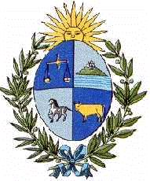

Uruguay
 |
 |
Información general
Nombre oficial: República Oriental del Uruguay.
Área: 176 215 km².
Costas: 660 km.
División política:19 departamentos
Provincia Capital
- Artigas Artigas
- Canelones Canelones
- Cerro Largo Melo
- Colonia Colonia
- Durazno Durazno
- Flores Trinidad
- Florida Florida
- Lavalleja Minas
- Maldonado Maldonado
- Montevideo Montevideo
- Paysandú Paysandú
- Río Negro Fray Bentos
- Rivera Rivera
- Rocha Rocha
- Salto Salto
- San José San José de Mayo
- Soriano Mercedes
- Tacuarembó Tacuarembó
- Treinta y Tres Treinta y Tres
Unidad monetaria: Peso uruguayo
1 Peso uruguayo = 100 céntimos.
Idiomas: Español (oficial); algunas comunidades de origen extranjero hablan también italiano, inglés, alemán, portugués, ruso, francés (no oficiales).
Fiesta nacional: 25 de agosto, Día de la Independencia.
Gentilicio: Uruguayo.
Hora oficial: GMT -3 horas (normal/verano).
Miembro de: ONU, OEA, ALADI, MERCOSUR.
Curiosidades
Después de Suriname, Uruguay es el país independiente más pequeño de América del Sur.
Montevideo está situada en la orilla norte del Rio de la Plata.
Perfil Ecónomico
Perfil Demográfico
Población: 3.241.003 hab.
Densidad de población: 19,3 hab/km².
Fuente:
http://www.ine.gub.uy/biblioteca/uruguayencifras2005/uruguay%20en%20cifras%202005.htm
Perfil Cultural
Alfabetismo: 98 %.
Religión:
- Católicos: 56,2%
- No religiosos: 38,3%
- Protestantes: 2,0%
- Judíos: 1,7%
- Ortodoxos: 0,7%
- Otros: 1,1%.
Algunas figuras notables:
- Delmira Agustini (1886-1914). Poetisa.
- Juana de Ibarbourou (1895-1980). Poetisa.
- José Belloni (1882-1965). Escultor.
- Eduardo Fabini (1882-1950). Compositor.
- Juan Carlos Onetti (1909-1994). Escritor.
- Horacio Quiroga (1878-1937).Poeta, dramaturgo y novelista.
- José Enrique Rodó (1872-1917).Escritor.
- Florencio Sánchez (1875-1910).Autor teatral y poeta.
- Joaquín Torres García (1874-1949).Pintor.
- Juan Zorrilla de San Martín (1855-1931). Poeta y escritor.
Lugares declarados patrimonio mundial por la UNESCO
- Barrio Histórico de la Ciudad de Colonia del Sacramento.
Sistema de Gobierno
Constitución vigente: 27 de noviembre de 1966.
Sistema ejecutivo: Presidente (elegido por mayoría simple del voto popular para un término de cinco años), asistido por el Vicepresidente y el Consejo de Ministros (trece miembros).
Sistema legislativo: Congreso Bicameral: Senado (treinta y un miembros) y Cámara de Diputados (noventa y nueve miembros). Los senadores y los diputados son elegidos para un término de cinco años. El Vicepresidente es el presidente del Congreso o Asamblea General.
Sistema judicial: Corte Suprema (cinco miembros) y tribunales menores.
Gobierno subdivisional: Las autoridades departamentales son elegidas por sufragio.
Aproximación histórica
Situada en la región del Río de la Plata, Uruguay limita al norte con Brasil, con Argentina por el oeste, y con el Océano Atlántico por el este y sur.
En 1561 Juan Díaz de Solís desembarcó en la costa del actual Uruguay donde los nativos le dieron muerte. La colonización permanente empezó con Fray Bernardino de Guzmán y otros franciscanos en 1624.
Entre 1810 y 1814, José Gervasio Artigas dirige la guerra por la independencia. En 1821 es anexado a Brasil, dos años después se une a Argentina y se inicia la guerra argentino-brasileña a la que ambos países pusieron termino en 1828, con la mediación de Gran Bretaña, sobre la base del reconocimiento de la independencia de la República del Uruguay.
El relieve de Uruguay es bajo y por la influencia del mar tiene un clima templado con reducidas alteraciones térmicas. La ganadería es uno de los pilares de la economía uruguaya. El 90 % de la población es urbana y está concentrada en mas de un 60 % en una estrecha franja sobre el Río de la Plata.
«-- ir al comienzo
«-- regresar